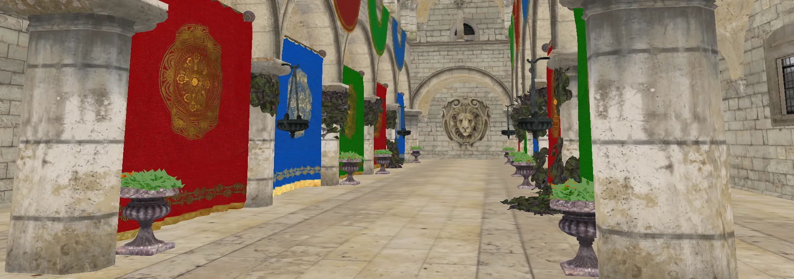

Shader Playground
OpenGL sandbox for experimenting with shaders, lighting models and 3D rendering techniques.
Main focus on this project is pure experimentation with real-time rendering techniques. It servers as a flexible environment for testing shaders, lighting models and rendering pipelines while working with complex 3D scenes and materials. I mainly use this project for quick iterations, idea prototypes and for freely breaking bunch of things!
In it's barebones, this project handles loading and rendering complex 3d models and scenes, such as famous Sponza model in the examples. It supports multi-textured materials, including diffuse, specular, normal and height maps.
In addition to that, it has custom shader system for expirimenting with classic lighting models, PBR workflows and stylized visual effects. And it also has free camera with projection settings for exploring large environments.
Features
- Model Loading - project supports common 3D formats such as .obj, .fbx and .dae ussing Assimp.
- Texture Support - handles diffuse, specular, normal and height maps.
- Shaders - easily swappable and modifiable shaders.
- Camera Controls - free camera with adjustable field of view and near/far clipping planes
- SDL2 Integration - project uses SDL2 for window management, input handling and OpenGL context creation

Random shader effect example
Technologies used
- C/C++
- OpenGL
- SDL2
- GLAD
- GLM
- Assimp
- stb_image